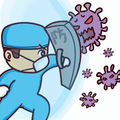

（一）在中央层面建立应急管理决策指挥机构和跨部门 协调工作机制
（二）及时、准确地发布疫情相关信息，利用多种途径普 及防疫相关知识
（三）关闭公共场所，暂停大部分经济社会活动，要求公 众外出戴口罩，以降低社会集聚式感染风险
（四）在城市和社区等多层面实施严格的封闭措施，切断 病毒传播途径
（五）以核酸检测为主，兼顾使用 CT 检查手段，力争应 检尽检，迅速甄别高风险群体与健康人群
（六）流行病调查与运行轨迹追踪相结合，多种方式严密 追踪密切接触者
（七）多途径增加医疗资源供 给，集中收治所有患者，集 中优质资源全力救治重症患者
（八）对所有患者和密切接触者实行“应隔尽隔”
（九）多措并举，为疫情防控提供全面保障
（十）重点保护老年人等高风险群体
（十一）应对疫情卷土重来的风险
2020年3月9日 - 新型冠状病毒会传染,新型冠状病毒会杀死宿主,美国对待疫情时,采取消极的态度,不采取相应的防疫措施,不对新型冠状病毒的疑似患者进行核酸检测,不和新型...
2020年7月9日 - 回答：美国人讲究自由,反对抗疫期间的隔离,中国人讲究守规矩,为了自己和他人的安全自觉遵守隔离
2020年3月11日 - 1月20日,CDC便启动了“紧急应变系统”;1月31日,政府宣布新冠病毒疫情为国家公共卫生紧急事件,并采取了一系列临时措施。 美国早期防疫主要采取围堵策略...
2020年3月22日 - 原标题:CBA外援讲述疫情期间从洛杉矶回中国经历:在美国的人真需要关注中国采取的措施 美国EAPN体育频道旗下“The Undefeated”网站3月20日报道称,因中...
2020年3月9日 - 新型冠状病毒会传染,新型冠状病毒会杀死宿主,美国对待疫情时,采取消极的态度,不采取相应的防疫措施,不对新型冠状病毒的疑似患者进行核酸检测,不和新型冠状病毒作斗争,...
2020年4月6日 - 在我国疫情爆发的时候,美国等一些西方国家采取的是隔岸观火的态度,这种态度来源于他们对于我国长久以来…
2020年3月10日 - 现在特朗普政府在疫情中采取,不防、不抗,不理会的措施完全是一种无所谓的态度。虽然美国有8个州已经宣布进入紧急状态,但大统领特朗普依旧是我自岿然不动。虽然现...
2020年5月12日 - 美国目前的疫情发展趋势,针对以上影响,今年内,各国院校可能会采取怎样的方式去应对?对于申请2021入学的学生预估越来越多的美国院校会考虑将截止日期延...
中国共产党的坚强领导是中国战胜疫情的根本保证。正是得益于中国共产党的集中统一领导，从中央到地方，从城市到农村，从政府到企业，从行业到区域，迅速形成了纵向到底、横向到边的强大合力，成为战胜疫情的重要前提和关键所在。疫情发生后，党中央高度重视，迅速作出部署。习近平总书记亲自指挥、亲自部署，多次作出重要指示，多次主持召开中央政治局常委会会议、中央政治局会议以及专题会议，研究部署疫情防控和复工复产事宜。中央应对疫情工作领导小组及时研究部署工作，中央指导组积极开展工作，国务院联防联控机制加强统筹协调，各级党委和政府积极作为，基层党组织充分发挥战斗堡垒作用，广大党员干部战斗在前、冲锋一线，托起人民的幸福安康，筑牢疫情防控的钢铁长城。这次抗疫斗争，再次彰显了中国共产党的伟大，再次印证坚持和完善中国共产党的领导是党和国家的根本所在、命脉所在，是全国各族人民的利益所在、幸福所在。
中国特色社会主义制度是战胜疫情的重要法宝。我国之所以能够在较短时间内控制住疫情，得益于中国特色社会主义制度所具有的强大的组织能力、动员能力和协调能力。在彰显全国一盘棋优势方面，党中央统一指挥、统一协调、统一调度，全国上下团结一心、群策群力。在彰显社会主义基本经济制度优势方面，社会主义基本经济制度创造了经济快速发展的奇迹，打造出强大的经济实力和日益增强的科技实力、综合国力，为打赢疫情防控阻击战提供雄厚的物质、技术基础。抗疫实践充分证明，中国特色社会主义制度具有强大生命力和巨大优越性。
国家高水平的治理能力是战胜疫情的重要保障。中国抗疫斗争充分彰显了国家治理能力和综合国力。疫情发生后，全国上下紧急行动，依托强大综合国力，开展全方位的人力组织战、物资保障战、科技突击战、资源运动战，在最短时间集中最大力量阻断疫情传播，书写了人类抗疫历史的奇迹。军地共调集346支国家医疗队、4.26万名医务人员和960多名公共卫生人员驰援湖北。统筹推进疫情防控与经济社会发展的效果正加速显现，加快构建起强大的公共卫生体系、健全预警响应机制已被提上国家重要议事日程。这些都充分表明，在此次抗疫中，我国治理体系发挥着显著优势、激发出强大效能，既扛住了严峻风险的考验和冲击，又化危为机、危中寻机，展现出令世界惊叹的高效。